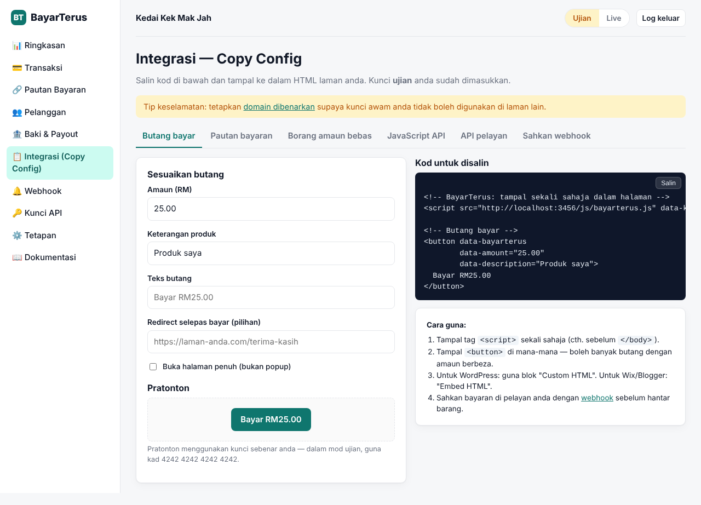
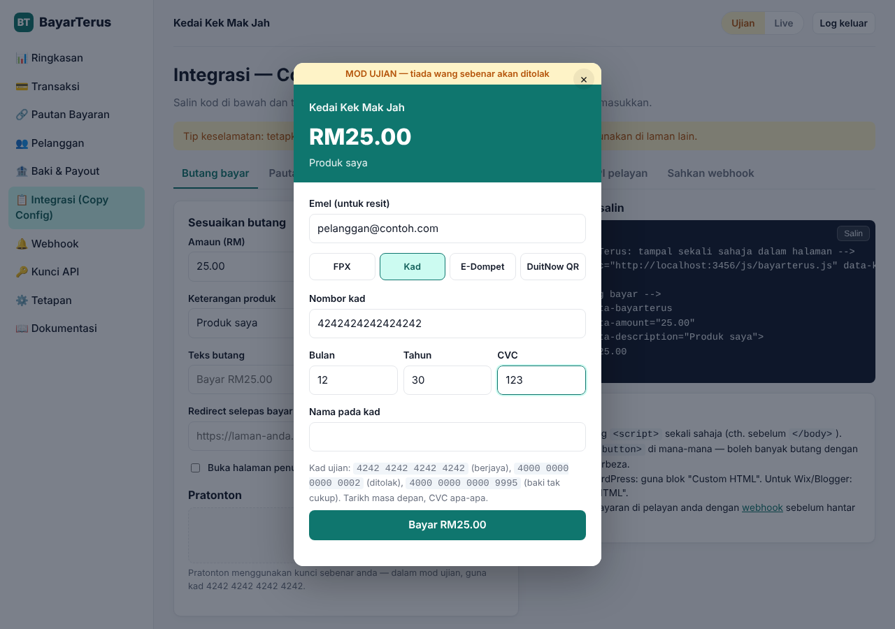
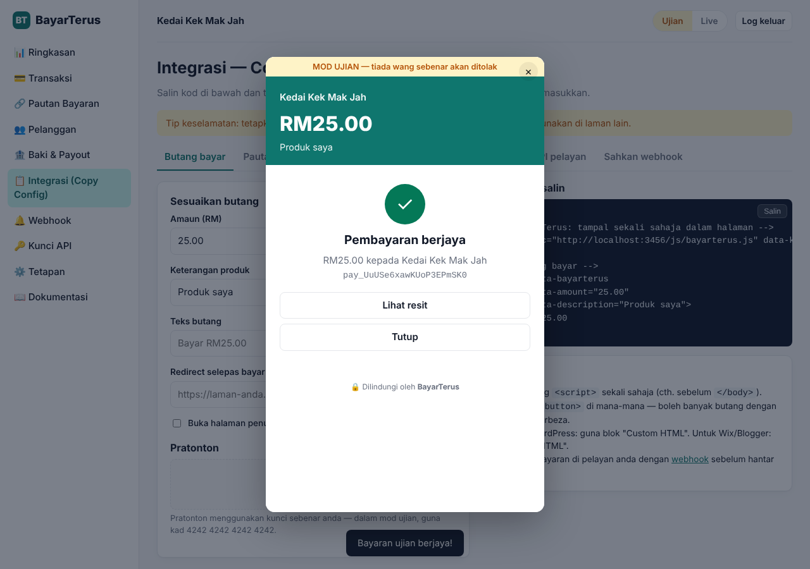
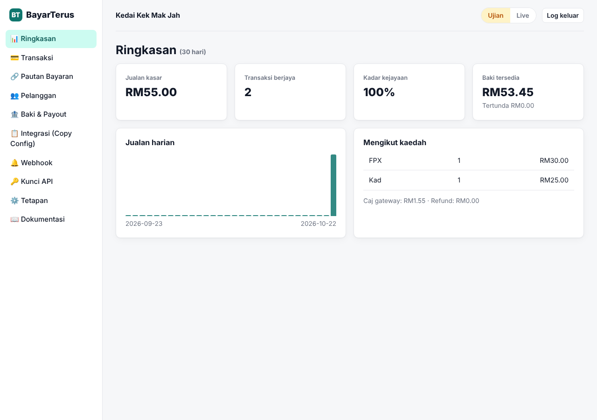
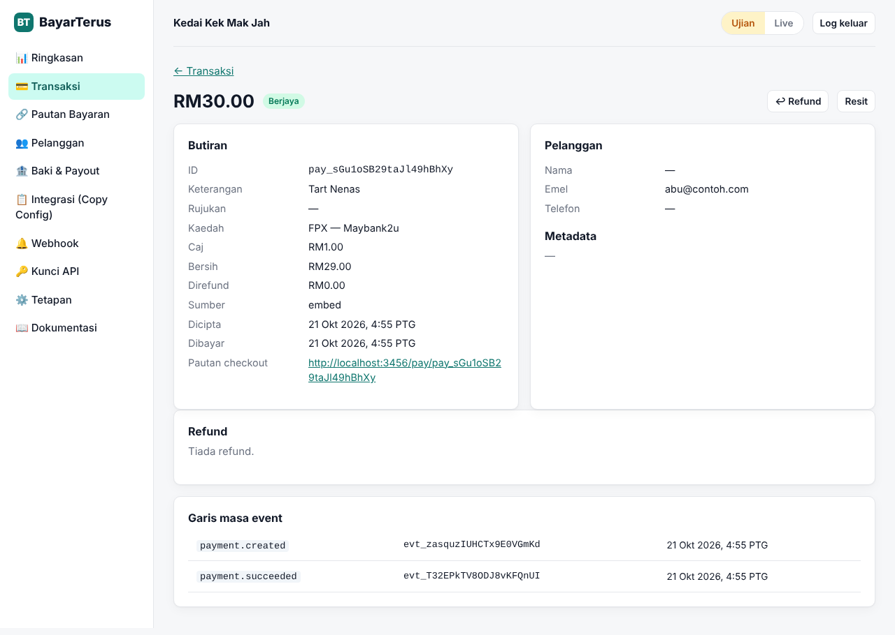
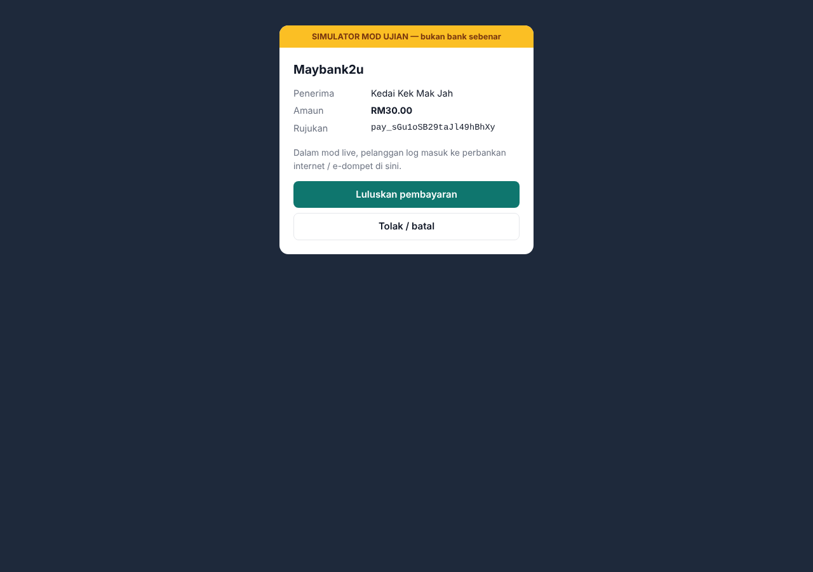
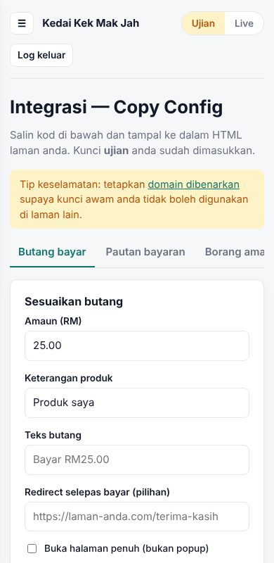

Terima bayaran di laman anda dengan satu salinan kod.
FPX, kad, e-dompet dan DuitNow QR melalui satu gateway. Merchant salin snippet dari dashboard, tampal di laman web mereka, siap.
<script src="https://pay.domain-anda.com/js/bayarterus.js"
data-key="pk_test_KUNCI_ANDA"></script>
<button data-bayarterus
data-amount="25.00"
data-description="Kek Coklat">
Bayar RM25
</button>Cara ia berfungsi
Daftar akaun
Merchant terus dapat kunci API mod ujian dan live.
Salin config
Dashboard menjana snippet lengkap dengan kunci merchant.
Tampal di laman
HTML biasa, WordPress, Wix, Blogger, React — semua boleh.
Terima duit
Webhook memaklumkan sistem merchant; baki boleh dikeluarkan ke bank.
Interface
Tangkapan skrin dari aplikasi sebenar yang berjalan dalam mod ujian. Klik untuk besarkan.







Fungsi
💳 Pelbagai kaedah bayaran
FPX (13 bank), kad Visa/Mastercard, Touch 'n Go, GrabPay, Boost, ShopeePay dan DuitNow QR.
📋 Embed copy-paste
Butang bayar, borang amaun bebas dan popup checkout tanpa kod pelayan.
🔗 Pautan bayaran
Kongsi di WhatsApp/Instagram. Amaun tetap atau pelanggan tentukan sendiri.
🔔 Webhook bertandatangan
HMAC-SHA256, cubaan semula automatik, log penghantaran dan hantar semula.
↩️ Refund penuh & separa
Dari dashboard atau API.
🏦 Baki & payout
Baki tersedia/tertunda dan pengeluaran ke akaun bank.
📊 Laporan
Statistik jualan, carian transaksi, eksport CSV, senarai pelanggan dan resit.
🧪 Mod ujian & live
Kunci berasingan, kad ujian dan bank simulasi.
🛡️ Keselamatan
Sekatan domain, idempotency key, had kadar, URL kembali bertandatangan.
Jalankan
Perlu Node.js 22.13 atau lebih baharu.
git clone -b claude/focused-fermat-p4b9tk https://github.com/Dynoz769/BayarTerus
cd BayarTerus
npm install
npm startBuka http://localhost:3000, daftar akaun, dan cuba bayar dengan kad ujian 4242 4242 4242 4242.
Untuk link awam, deploy ke hosting yang menjalankan Node.js (Railway, Render, VPS) dengan cakera kekal untuk pangkalan data. Mod live memerlukan pemproses bayaran berlesen — lihat README.